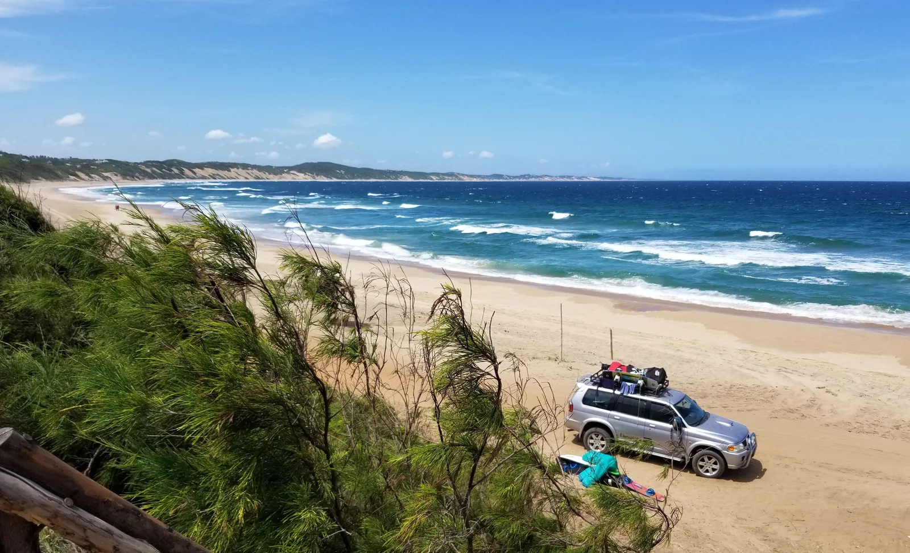
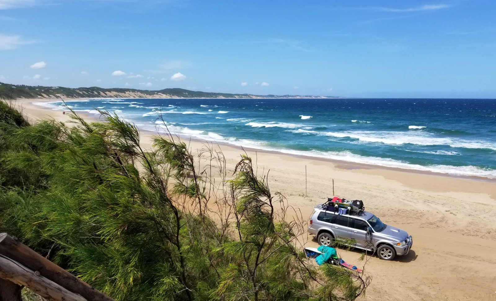

Viajes y excursiones de Kitesurf
Más de 2500 km de playas y rincones
Viajar, la esencia del kitesurf
Mozambique es conocido como el país con las playas más bonitas de África. Una reserva inagotable de rincones vírgenes, la mayoría de los cuales están por descubrir. El kitesurf, es uno de esos deportes fascinantes, emocionantes, propicios para viajar y descubrir nuevos destinos. Nos adaptamos a tus demandas, desde excursiones de 1 solo día, hasta de varios días en lugares que no olvidarás fácilmente.


Excursiones de un día
A menos de 1 hora de Bilene, en 4x4, cruzaremos pueblos típicos locales, y recorreremos bellos paisajes para llevarte a navegar a las aguas más planas que hayas podido disfrutar.


Excursión de varios días
La costa mozambicana es tan extensa que nos permite planificar viajes allá donde el viento tenga mejores conciones, Tofo, Inharimé, Zavora, Inhambae, son algunos de nuestros destinos favoritos.


Viaje de una semana
¿Te atreves a recorrer el sur de mozambique haciendo Kite?. Disfrutaras de la cultura local, de sus paisajes y comidas, nos adentraremos hasta Vilanculos, o a algunos "lugares secretos" que nos encanta visitar. Te mostraremos lugares donde la desconexión digital es total, dormiremos en casas de paja, rodeados solo de los sonidos del mar.
 
